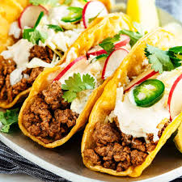

Taco Recipe

Description
Embark on a culinary escapade with our Sizzling Chorizo Tacos recipe,
a symphony of flavors that promises to ignite your taste buds.
Brace yourself for a feast of robust and savory notes,
as succulent chorizo takes the spotlight in these mouthwatering tacos.
With every bite, you'll be transported to the vibrant streets of Mexico,
where sizzling aromas and bold tastes reign supreme.
Ingredients
- 1 pound fresh chorizo sausage, casings removed
- 1 cup diced white onion
- 1 cup chopped fresh cilantro
- 1 lime, cut into wedges
- 1 cup crumbled queso fresco or feta cheese
- 8 small corn tortillas
- 2 tablespoons vegetable oil
- 1 teaspoon smoked paprika
- 1/2 teaspoon cumin
- Salt and pepper to taste
Directions
- Cook the Chorizo: In a skillet over medium heat,
the chorizo sausage sizzles to perfection. As it transforms from raw
to tantalizingly browned, the fragrant blend of smoked paprika and
cumin envelops your senses in a whirlwind of aroma.
- Warm the Tortillas: The corn tortillas are gently warmed,
their softness and warmth a testament to the care that goes into every
element of these tacos.
- Assemble the Tacos: With an artful touch, the cooked chorizo
is nestled onto each tortilla, its savory essence an invitation to indulge
in its depths. Diced white onion dances over the meat, providing a harmonious
crunch that complements the symphony of flavors.
- Cilantro Magic: Freshly chopped cilantro showers over the ensemble,
a cascade of color and freshness that balances the intensity of the chorizo
with its invigorating notes.
- Cheese Decadence: Queso fresco or feta cheese crumbles elegantly
crown the tacos, their tangy richness elevating the experience to a crescendo of taste.
- Limey Zest: A final flourish of lime wedges allows you to infuse each
taco with a burst of citrusy vibrancy, the perfect finale to a journey of flavors.
Home Page